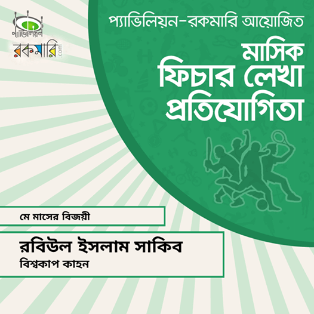

Content Writing
-One of My Skills-
I love writing. I found interest in writing about cricket. I am continuing my writings. At present, I write on various topics. Besides our own Pathgriho Network's blogs, I write on Cricketkhor, Pavillion and Roar Bangla because I love it. Tried to mention some of the best of my writings here.
-Cricketkhor-
1. চলুন, সাকিব আল হাসানের বিকল্প খুঁজি
সাকিব আল হাসান, বাংলাদেশ ক্রিকেট ইতিহাসের সেরা ক্রিকেটারতো অবশ্যই, এই মুহূর্তে বিশ্ব-ক্রিকেটেরও অন্যতম সেরা একজন। উইজডেনের শতাব্দীর সেরা টেস্ট আর ওডিআই ক্রিকেটারের তালিকাতেও আছেন সাকিব। সেই সাকিবের বিকল্প খুঁজে পাওয়া কি আদৌ সম্ভব? পরীক্ষার খাতায় এই প্রশ্নটিকে “এক কথায় উত্তর দাও” ধরনের প্রশ্ন করলে কথা খুঁজে পাওয়া যাবে না, “এক শব্দে উত্তর দাও” টাইপ প্রশ্ন হলে “না” লিখে দিয়ে হাফ ছেড়ে বাঁচবে পরীক্ষার্থীরা। তাহলে খুঁজে পাওয়া যখন সম্ভবই না তখন এই লেখাটির উদ্দেশ্য কি? “নেই কাজ তো খই ভাজ” নামক বাক্যটির প্রতি অতিরিক্ত ভালোবাসাই এই লেখাটির পেছনের একমাত্র কারণ।
2. রেকর্ডস, সাকিব ক্যান ইজিলি পুট হিস নেম অন
টেস্ট ক্রিকেটে ৪ হাজার রানের সাথে ১৫০ উইকেট নেয়া অলরাউন্ডারের তালিকায় ৫ম ক্রিকেটার হিসেবে যুক্ত হয়েছেন বেন স্টোকস। ২১০ টেস্ট উইকেটের মালিক সাকিবের শুধু প্রয়োজন আর ১৩৮ রান, তাহলেই গ্যারি সোবার্স, কপিল দেব, ইয়ান বোথাম, জ্যাক ক্যালিস আর স্টোকসদের সাথে যুক্ত হবে সাকিব আল হাসানের নাম।
3. মোহাম্মদ আশরাফুল: স্বরচিত মহাকাব্যের নায়ক থেকে খলনায়ক যিনি!
[এক]
অগণিত মহাকাব্যের প্লট দানকারী ক্রিকেটের ইতিহাসটা শতাধিক বছরের। এই শতাধিক বছরে ক্রিকেট নামক বৃক্ষটা বড় হয়েছে অনেক। বিশাল বৃক্ষের শাখা প্রশাখা ছড়িয়েছে খুব; বহু দেশ, বহু জাতি সেই শাখা প্রশাখার ছায়াতলে বসে প্রতিনিয়তই চেষ্টা করছে নিজেদের মতো করে নতুন কোনো মহাকাব্য লেখার। এই শতাধিক বছরে একের পর এক মহাকাব্য লিখে গেছেন অনেক কবিই। স্যার ডোনাল্ড ব্র্যাডম্যান, গ্রাহাম গুচ, অ্যালান বর্ডার, ব্রায়ান লারাদের মতো অনেকেই একে একে লিখে গেছেন অসংখ্য গল্প, কাব্য, মহাকাব্য।
4. ক্রিকেটে ডেনমার্ক ১-১ বাংলাদেশ
বাংলাদেশ ফুটবল টিমকে এই মূহুর্তে মাঠে থেকে নেতৃত্ব দেন কে? উত্তরটা জামাল ভূঁইয়া। কাপ্তানির পাশাপাশি বিইন স্পোর্টস থেকে অবসরে মাঝেমধ্যেই লা লিগার ম্যাচে ধারাভাষ্যও করে থাকেন লাল সবুজের এই প্রতিনিধি। ।জামাল ভূঁইয়ার জন্মভূমি ডেনমার্ক। ফুটবলে অনেক এগিয়ে ইউরোপের এই দেশ।কিন্তু ক্রিকেটে? ক্রিকেটে ডেনমার্কের ইতিহাস নিয়ে নয়, কথা বলবো বাংলাদেশ বনাম ডেনমার্কের ক্রিকেট ম্যাচ নিয়ে।
5. T20i তে সৌম্য সরকার
সৌম্য সরকার, প্রথম শ্রেণির ক্রিকেটে ১ম বাংলাদেশী হিসেবে দ্বিশতক হাকানো এই বাঁহাতি ব্যাটসম্যানকে আমরা মারমুখী হিসেবেই জানি। নামে সৌম্য শান্ত সরকার, স্বভাবেও শান্তই বটে। তবে ব্যাট হাতে বোলারদেরকে শাসন করার সময় মোটেও শান্ত থাকতে চাননা ইনি। একদিনের ক্রিকেটে ১০০ ছোঁয়া স্ট্রাইক রেটে আর টি২০ তে ১২৫.৩৫ স্ট্রাইক রেটে খেলা এই ক্রিকেটারের আন্তর্জাতিক টি২০ এর ব্যাটিং, বোলিং আর ফিল্ডিং পারফরমেন্সের উপর কিছুটা আলোকপাত করব আজ।
6. অভিষেক অভিষেক খেলা
মাঠে খেলেন সাকিব-মুশফিকরা,পেছন থেকে তাঁদেরকে অনুপ্রেরণা দিয়ে যায় দেশের কোটি ক্রিকেটখোর। তবে মাঠে সাকিব-মুশফিক-রিয়াদদের সাথে আর কারা খেলবেন সেই সিদ্ধান্তটা নিয়ে আবার খেলেন নান্নু-বাশাররা। ১৮ বছর ধরে টেস্ট খেলা বাংলাদেশ আজকে যে ম্যাচ খেলতে নেমেছে তা সংখ্যায় ১১২ নম্বর।
-Pavilion-
1. বিশ্বকাপ কাহন
ক্রিকেট কি? শুধুই খেলা? ব্যাট বলের কিছু শৃঙ্খলিত চালনা? হ্যাঁ, হতে পারে। সংজ্ঞা তো তাই-ই বলে। কিন্তু সত্যিই কি ক্রিকেট শুধুই খেলা?
প্রশ্নটা কোথায় করছেন তার উপর ভিত্তি করে বদলাবে উত্তরটাও। প্রশ্ন টা যদি করা হয় এই উপমহাদেশের কোনো অলিতে গলিতে , তবে ক্রিকেটটা শুধু খেলা নয়, ক্রিকেটটা আবেগ। আর উপমহাদেশের মধ্যেকার ৫৬ হাজার বর্গমাইলের এই লাল সবুজের দেশে ক্রিকেটটা তার থেকেও অনেক বেশি কিছু- এ যেন কোটি বাঙালির কাছে সঞ্জীবনী সুধা।
2. টেস্ট ক্রিকেটে ১৯ পেরিয়ে।
২০১৫ বিশ্বকাপের কোয়ার্টার ফাইনালের পর ঘরের মাঠে পাকিস্তান,ভারত আর দক্ষিণ আফ্রিকাকে ওডিআই সিরিজে হারানোয় বদলে যাওয়া এক বাংলাদেশের স্বপ্ন দেখা শুরু করেছিলো কোটি বাঙালি। সাথে বৃষ্টির কারণে '১৭ এর চ্যাম্পিয়নস ট্রফির সেমিফাইনাল। এসবই তো স্বপ্ন দেখিয়েছে আমাদের '১৯ বিশ্বকাপে সবথেকে ভালো করার। ওডিআই রেকর্ডস বাংলাদেশের যেমনই হোক, টেস্ট টা যে বাংলাদেশ খেলতেই শেখেনি এখনও সেটা সবাই বিশ্বাস করবে।
3. দেশের ক্রিকেটের ভিনদেশী বন্ধু
ক্রিকেটটা কারো কারো কাছে নিছক বিনোদন, কারো কাছে অকৃত্রিম ভালোবাসা। কারো কাছে অবসর কাটানোর মাধ্যম, আবার কারও কাছে অমৃতরসের মতোই দামী। বিশেষ করে লাল সবুজের এই দেশে ক্রিকেটটা অন্তত খেলার থেকে একটু হলেও বেশি কিছু।
স্বাধীন বাংলার জন্মের আগে এদেশে ফুটবলটা ছিলো সবথেকে জনপ্রিয়। মোনেম মুন্না, শেখ আসলাম, কাজি সালাউদ্দিনদের খেলা দেখতে দেশের বিভিন্ন প্রান্ত থেকে ফুটবল প্রেমীরা এসে উপচে পড়তো স্টেডিয়ামগুলোতে। সে সময় ফুটবল এতটাই জনপ্রিয় ছিলো যে স্বাধীন বাংলা ফুটবল দল ফুটবলের মাধ্যমে করে যেতে পেরেছেন স্বাধীন এক দেশ পাবার সংগ্রাম
4. দেশ বিদেশে সৌম্য সরকার
সৌম্য শান্ত সরকার, নামে আর স্বভাবে শান্ত হলেও ব্যাট হাতে বোলারদেরকে শাসন করার সময় মোটেও শান্ত থাকতে চাননা। টি২০ স্পেশালিষ্ট হিসেবেই সমর্থকরা মানে তাকে। ক্রিকেটীয় ব্যকরণের দিক থেকে যদি নাও হয়ে থাকেন তবুও সমর্থকদের ভাবনার বা চাওয়ার দিক থেকে অবশ্যই তিনি ধুমধারাক্কা – চার - ছক্কার ক্রিকেটের জন্যই আদর্শ। দলের প্রয়োজনে বলও হাতে তুলে নেন প্রায়শই। প্রথম শ্রেণির ক্রিকেটে ১ম বাংলাদেশী হিসেবে দ্বিশতক হাকানো এই বাঁহাতি ব্যাটসম্যানের টেস্ট, টি২০ আর ওডিআই এর দেশের মাটি আর বিদেশের মাটির শুধু ব্যাটিং পারফরমেন্স নিয়েই “দেশ বিদেশে সৌম্য সরকার”।
-Roar Bangla-
1. আর্চি থেকে গুগল: সার্চ ইঞ্জিনের বিবর্তন
ধরুন, কিছু একটা নিয়ে কাজ করছেন, হঠাৎ করে আটকে গেলেন। সমস্যার সমাধানের জন্য আশেপাশে কেউ নেই। এমন সময় উপায় কী? গুগলে সার্চ করা। কিংবা ধরুন, নতুন এক আত্মীয়ের বাড়ী যাচ্ছেন, ঠিকানা জানেন, কিন্তু রাস্তা সম্পর্কে দ্বিধান্বিত; চট করেই পকেট থেকে মোবাইল ফোনটা বের করে গুগল করে জেনে নিলেন কোন রাস্তা দিয়ে যেতে হবে।
প্রাত্যহিক জীবনের এমন অসংখ্য কাজ বা সমস্যার সমাধানের জন্য আমরা ছুটে যাই গুগলের কাছে। গুগল নামক সার্চ ইঞ্জিনে খুঁজে নেয়ার চেষ্টা করি অজানা কোনো তথ্য। গুগলের মতোই সার্চ ইঞ্জিন ইয়াহু, বিং কিংবা ডাক-ডাক-গো।
2.শার্টকাহন
অনেক যুগ আগে থেকে এখনও পর্যন্ত শার্ট মানুষের প্রিয় একটি পরিধেয় বস্ত্র। স্কুল-কলেজের ইউনিফর্ম হোক অথবা অফিসের জন্য ঠিক করা নির্দিষ্ট ড্রেসকোডের অংশ- শার্ট আছে সব জায়গাতেই। কোনো বিয়ের অনুষ্ঠান থেকে শুরু করে চাকরির ইন্টারভিউ, সবখানেই শার্ট। কিন্তু এই শার্টের ইতিহাস আমরা ক'জন জানি? এত বছরের প্রিয় শার্টটি প্রথম কবে, কোথায় তৈরি হয়েছে, শুরুতে শার্টের গঠন কেমন ছিল- এই প্রশ্নগুলো মনে কখনও জেগেছে? অন্তত ছেলেদের আর মেয়েদের শার্টের বোতাম কেন ভিন্ন দিকে হয় সেই প্রশ্নের উত্তরই বা জানার চেষ্টা করেছেন কখনও? হয়তো হ্যাঁ, হয়তো না। এই প্রশ্নগুলোর উত্তর নিয়েই আজকের 'শার্টকাহন'।
-Pathgriho Network-
-পাঠগৃহ
The
Reading Room-
-Different Marketing-
-&-
-TechKib-
2. 150 SEO Factors: Get a Higher Google Search Ranking!
3. Digital Marketing Vs Traditional Marketing: Which One is More Effective?
4. Is SEO Spam? [Examples of Over Optimization]
5. Google Panda and Panda Penalty
6. The Preprocessor
7. Standard C Library Functions (ANSI)
8. C Tokens in C Programming Language
-Accomplishment-

.jpg)
.jpg)